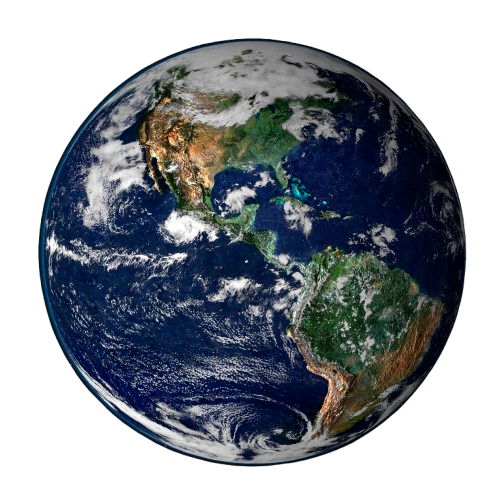
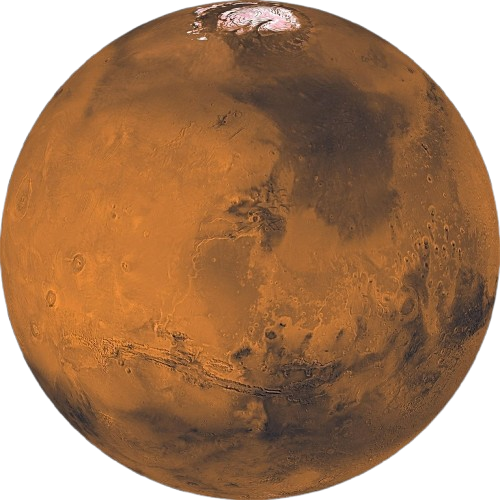
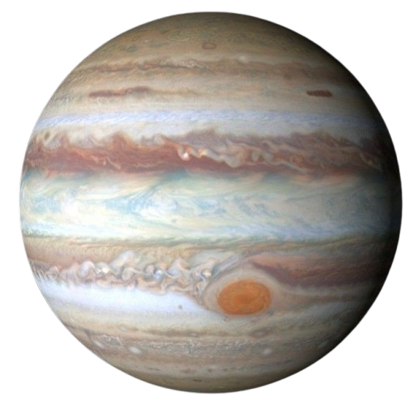
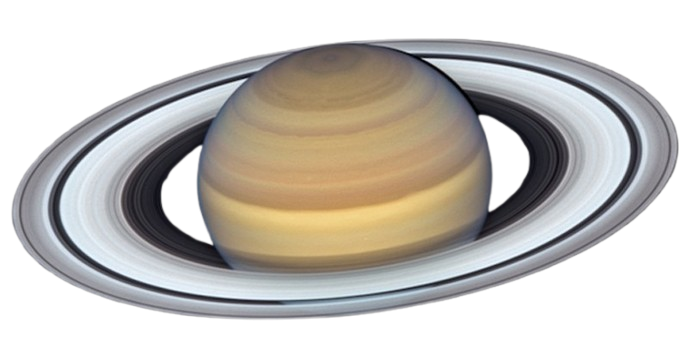

| Earth | Mars | Jupiter | Saturn | |
|---|---|---|---|---|
| Planetary Images |  |  |  |  |
| Classification | Terrestial | Terrestial | Gas Giant | Gas Giant |
| Mass (1021 tons) | 6.58 | 0.707 | 2092 | 626 |
| Diameter (miles) | 7926 | 4221 | 88846 | 74897 |
| Force of Gravity (ft/s2) | 32.1 | 12.1 | 75.9 | 29.4 |
| Length of Day (hours) | 24.0 | 24.7 | 9.9 | 10.7 |
| Orbital Period (Earth days) | 365.2 | 687.0 | 4331 | 10747 |
| Mean Temperature (F°) | 59° | -85° | -166° | -220° |
| Number of Moons | 1 | 2 | 95 | 146 |
Each column is colored to represent the planet in that column. The font size goes from largest to smallest in the order of largest diameter to smallest diameter.